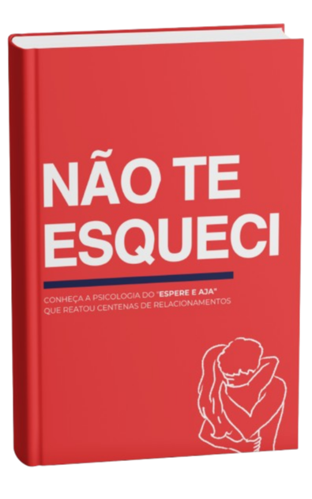
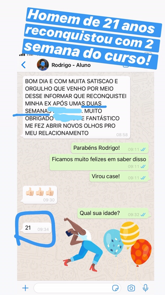

Conheça a psicologia do "espere e aja" que
REATOU CENTENAS DE RELACIONAMENTOS
Dar um tempo ou terminar um relacionamento não precisa ser uma medida definitiva.
Se o relacionamento terminou hoje, pode ser que haja um recomeço amanhã, TUDO DEPENDE DE COMO VOCÊ SE COMPORTA.
O ponto chave é: se ainda existe amor entre você e seu/sua ex, é super possível de vocês reatarem.
Quando existe sentimento, o relacionamento por mais que termine de maneira radical, ainda fica vivo no coração do casal e a vida pessoal que mantinham juntos não é esquecida de uma hora para a outra.
Porém, muitas vezes o/a terminador acaba falando: "eu não sinto mais nada por você!" e é aí que o desespero começa.
Como assim? Não sente mais nada? Como um relacionamento pode esfriar assim de uma hora para outra? Isso só pode ser outra pessoa ou mágoa influenciando…
Os pensamentos não param nas nossas cabeças e ficamos tentando encontrar um motivo. Mas sabe qual é a verdade? Muitas vezes esse motivo não está no plano físico e sim no plano emocional, e só através de estratégias psicológicas é que você descobrirá a verdade, o verdadeiro motivo.
Assim, por conta de não sabermos lidar em situações como estas, agimos pela emoção, e infelizmente, o relacionamento acaba. O casal não volta e o que era para ser para sempre, tem um fim.
Por isso, é importante que, caso você ache que não é o fim, siga passo-a-passo dessa psicologia que reatou centenas de casais.
Tudo é uma questão sobre saber como e quando esperar e agir.

Então adquira agora mesmo o
"NÃO TE ESQUECI"
Suas informações estão seguras.
DE R$97,00 POR SOMENTE R$29,90 - PROMOÇÃO POR TEMPO LIMITADO ⚡️
DESEJO TER MEU AMOR DE VOLTA